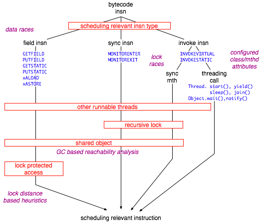
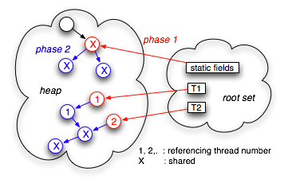

The number of different scheduling combinations is the prevalent factor for the state space size of concurrent programs. Fortunately, for most practical purposes it is not necessary to explore all possible instruction interleavings for all threads. The number of scheduling induced states can be significantly reduced by grouping all instruction sequences in a thread that cannot have effects outside this thread itself, collapsing them into a single transition. This technique is called Partial Order Reduction (POR), and typically results in more than 70% reduction of state spaces.
JPF employs an on-the-fly POR that does not rely on user instrumentation or static analysis. JPF automatically determines at runtime which instructions have to be treated as state transition boundaries. If POR is enabled (configured via vm.por property), a forward request to the VM executes all instructions in the current thread until one of the following conditions is met:
Detection of both conditions are delegated to the instruction object itself (Instruction.execute(..)), passing down information about the current VM execution state and threading context. If the instruction is a transition breaker, it creates a ChoiceGenerator and schedules itself for re-execution.
executeStep () { .. do { if ((nextPc = executeInstruction()) == pc) { break; } else { pc = nextPc; } .. } while (pc != null); .. }
Each bytecode instruction type corresponds to a concrete gov.nasa.jpf.Instruction subclass that determins scheduling relevance based on the following factors:
Instruction Type - due to the stack based nature of the JVM, only about 10% of the Java bytecode instructions are scheduling relevant, i.e. can have effects across thread boundaries. The interesting instructions include direct synchronization (monitorEnter, monitorexit, invokeX on synchronized methods), field access (putX, getX), array element access (Xaload, Xastore), and invoke calls of certain Thread (start(), sleep(), yield(), join()) and Object methods (wait(), notify()).
Object Reachability - besides direct synchronizatio instructions, field access is the major type of interaction between threads. However, not all putX / getX instructions have to be considered, only the ones referring to objects that are reachable by at least two threads can cause data races. While reachability analysis is an expensive operation, the VM already performs a similiar task during garbage collection, which is extended to support POR.
Thread and Lock Information - even if the instruction type and the object reachability suggest scheduling relevance, there is no need to break the current transition in case there is no other runnable thread. In addition, lock acquisition and release (monitorenter, monitorexit) do not have to be considered as transition boundaries if there they happen recursively - only the first and the last lock operation can lead to rescheduling.

Figure 1: scheduling relevance filters
While JPF uses these informations to automatically deduce scheduling relevance, there exist three mechanisms to explicitly control transition boundaries (i.e. potential thread interleavings)
Attributor - a configurable concrete class of this type is used by JPF during class loading to determine object, method and field attributes of selected classes and class sets. The most important attributes with respect to POR are method atomicity and scheduling relevance levels: (a) never relevant, (b) always scheduling relevant, (c) only relevant in the context of other runnables. (d) only relevant of toplevel lock. The default Attributor executes all java.* code atomically, which is can be too aggressive (i.e. can cause BlockedAtomicExceptions).
VMListener - a listener can explicitly request a reschedule by calling ThreadInfo.yield() in response of a instruction execution notification.
Verify - the Verify class serves as an API to communicate between the test application and JPF, and contains beginAtomic(), endAtomic() functions to control thread interleaving
The main effort of JPFs POR support relates to extending its precise mark and sweep collector. POR reachability is a subset of collector reachability, hence the mechanism piggybacks on the mark phase object traversal. It is complicated by the fact that certain reference chains exist only in the (hidden) VM implementatiion layer. For instance, every thread has a reference to its ThreadGroup, and the ThreadGroup objects in turn have references to all included threads, hence - from a garbage collection perspective - all threads within a group are mutually reachable. If the application under test does not use Java reflection and runtime queries like thread enumeration, POR reachability should follow accessibility rules as closely as possible. While JPF's POR does not yet support protected and private access modifiers, it includes a mechanism to specify that certain fields should not be used to promote POR reachability. This attribute is set via the configured Attributor at class load time.

Figure 2: GC based reachability analysis mark phase
With this mechanism, calculating POR reachability becomes a straight forward approach that is divided into two phases. Phase 1 non-recursively marks all objects of the root set (mostly static fields and thread stacks), recording the id of the referencing thread. In case an object is reachable from a static field, or from two threads, it's status is set to shared. Phase 2 recursively traverses all heap objects, propagating either a set shared status or the referencing thread id through all reference fields that are not marked as reachability firewalls. Again, if the traversal hits an object that is already marked as referenced by another thread, it promotes the object status to shared, and from there propagates the shared status instead of the thread id.
To further reduce irrelevant context switches, JPF can check for lock protection to determine if a field access is scheduling relevant. If the property vm.por.sync_detection is set to true, JPF looks for potential lock candidates when analyzing GET_x/SET_x instructions. The policy of detecting lock candidates is configurable with the property vm.por.fieldlockinfo.class, the default gov.nasa.jpf.jvm.StatisticFieldLockInfo just defers the decision by recording the set of locks held when executing the field instruction, computing the set intersection at subsequent accesses. If the set does not get empty for a configurable number of field accesses, the field is marked as lock protected, and henceforth not treated as transition boundary. If however the set should afterwards become empty, a warning like
Warning: unprotected field access of: Event@70.count in thread: "Thread-1" oldclassic.java:107 sync-detection assumed to be protected by: Event@70 found to be protected by: {} >>> re-run with 'vm.por.sync_detection=false' or exclude field from checks <<<
is issued, and the field access is again treated as transition breaker.
The set of fields to be analyzed can be specified with the properties vm.por.include_fields and vm.por.exclude_fields. Per default, fields of system library classes are not analyzed (this is esp. useful to avoid context switches for global objects like System.out).
Even with all these optimizations, some unwanted transition breakers are likely to remain. This is mostly due to two constraints:
Especially the last issue might be subject to further enhancements